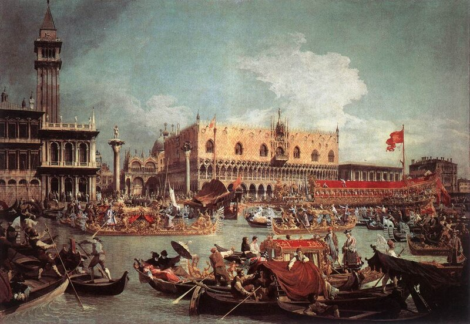

На полотне Каналетто (1730) показано празднование Вознесения в Венеции
Итак, квинкерема вышла на старт гонок в окружении легких галер-трирем. Вот как Сануто (о нем мы уже говорили неоднократно) описывает это событие.
После вечерни Его светлость [дож Венеции] пригласил всех послов и в сопровождении многочисленных патрициев на гондолах они отправились ко дворцу, где были приготовлены места под шатром. Около дворца и по всему каналу находилось бесчисленное множество гондол, причем плата за каждую в этот день подскочила до 8–10 ливров, так велико было желание взглянуть на гонки. Я заметил на борту этих судов множество дам. Присутствовали также Инквизитор, Его преосвященство кардинал Пизанский и архиепископ Никосии… В назначенный час был дан сигнал и гонки начались. Лидерство захватила трирема Cornera , но когда участники гонок почти приблизились ко дворцу, Cornera оказалась так близко к берегу, что квинкереме удалось обойти ее и первой пройти перед дожем, а затем удерживать лидерство до самого собора Св. Марка, финишировав в сопровождении огромной армады разнообразных судов. Зрелище было великолепное. Квинкерема выглядела очень мощным гребным кораблем, и хотя опередила легкие галеры совсем немного, обессмертила имя своего творца Ветторе Фаусто. После того, как дож удалился, галера прошла по Большому каналу до Каʻ Фоскари, где развернулась, правда, с большим трудом, так как имела в длину 28 passo (48,7 м; один венецианский passo равен 1,738674 м – g._g.)), более чем на три passo длиннее легких галер. Было очень много зрителей на судах, и я среди них. Праздник продолжался до вечера.
Таким образом, Фаусто стал победителем. Его друзья, гуманисты Рамузио и Бембо, обменялись по этому поводу восторженными письмами, отмечая новый успех сторонников возрождения греческой науки, описывая как в начале гонки Фаусто ограничивал своих гребцов, а затем в конце заставил их работать в полную силу, так что они легко обошли трирему (вот так рождаются мифы!)
Квинкерему направили в военный флот под командование Джероломо де Канала, от которого был получен восторженный отзыв. Однако в этом отзыве уже нет слов о том, что при ходе на веслах это самый быстроходный корабль. Капитан уклончиво написал, что «немного есть кораблей, способных идти быстрее». Под парусом квинкерема вела себя отлично. Де Канал рекомендовал построить еще десять квинкерем, объясняя это тем, что против флота венецианских легких галер во главе с новыми кораблями не сможет выстоять никакой неприятель. Однако здесь же капитан сделал приписку, что квинкерема – это не тот корабль, который нужно использовать в обычных ситуациях, во-первых, из-за ее престижа, и во-вторых – из-за большой стоимости.
Следующей весной де Канал смог бы найти еще одну причину, по которой квинкеремы не стоит использовать в обычных ситуациях. По пути на Крит корабль попал в шторм, так что в течение почти двух недель не смог натянуть тент, под которым гребцы обычно укрывались от солнца и дождя. Погода была очень холодной, гребцы замерзли, многие из них умерли, а квинкерему моряки стали называть «склеп», «покойницкая». Высокая смертность в первую очередь была вызвана неблагоприятными погодными условиями, но моряки всегда должны исходить из плохой погоды во время плавания. Возможно, большая скученность гребцов на каждой банке увеличила смертность.
То ли по этой причине, то ли по причине большой стоимости, но Фаусто так и не дождался ответа на свое предложение построить еще пять квинкерем. Однако Фаусто был практичным человеком, и стремился применить на практике полученные знания математики и механики. Он согласился, что его квинкерема не может в данное время заменить все корабли венецианского гребного флота. Но в качестве альтернативного варианта он выдвинул идею доработать стоящие на вооружении галеры. В 1532 году он предложил реконструировать пять находящихся в Арсенале больших галер-бастард (galee bastarde) с целью увеличения их скорости, для чего надстроить корпус по принципам, которые существовали в кораблестроении поздней Римской империи, но были утрачены. Фаусто уверял, что тяжелые галеры, имеющие по четыре гребца на каждой банке, у каждого из которых было индивидуальное весло, будут так же легки на ходу, как легкие галеры-триремы. Профессор красноречия умел убеждать. Руководство Арсенала дало согласие на эту реконструкцию, правда при одном условии: если Фаусто не добьется заявленных характеристик, возвращать конструкцию галер в исходное состояние он будет за свой счет. Найти документы, проливающие свет на исход этого мероприятия, не удалось. Но надо думать, что у Фаусто получилось, так как он продолжал сотрудничество с Арсеналом, руководство которого признало в нем авторитетного мастера. Когда в 1536 году он объявил, что нашел новый способ сократить количество строевого леса при постройке легких галер – а дефицит корабельного леса стал самой больной проблемой для Венеции – Сенат тут же разрешил передать ему для постройки три новых галеры, правда, предупредив, что после их спуска он не получит новых заказов до тех пор, пока экспериментальные галеры не пройдут проверку на боевой службе в море. (Такие взаимоотношения руководства Арсенала с ведущими конструкторами напомнили мне записки авиаконструктора Яковлева об отношениях Сталина и создателей наших боевых самолетов). В 1543 году Фаусто получил заказ на проведение испытаний новой конструкции палубы легких галер, призванной облегчить процесс гребли. Ветторе удалось так усовершенствовать конструкцию корпуса галеры, что его услуги оказались востребованными сразу в нескольких доках, где строились новые галеры.
Проявил себя Фаусто и в области постройки «круглых», чисто парусных кораблей. Но это не наша епархия и туда мы пока не пойдем.
Если судить Фаусто историческим судом по его же высоким меркам, то следует признать, что он потерпел фиаско. Фаусто мечтал завоевать славу второго Архимеда, преобразовав искусство кораблестроения на основе знаний математики и механики, почерпнутых из античных источников. Ему этого не удалось. Его друзья писали, что он родился раньше своего времени. Основную часть галер построил на венецианских верфях молодой Франческо Брессан, сын одного из братьев-кораблестроителей, со своими товарищами. Но для них Фаусто все равно был «великим Фаусто», традиции которого сохранялись в венецианском кораблестроении еще долгие годы. Конструктор галеасов, прославившихся в сражении при Лепанто, Джованни ди Занетто, сменивший в 1570 году Франческо Брессана, с гордостью называл себя учеником Фаусто. И хотя система гребли на галеасах в корне отличалась от системы alla sensile, в идейной стороне новой системы четко просматривается влияние гуманиста Фаусто. Поэтому как само собой разумеющееся представляется, что при создании галеасов был приглашен великий математик и механик Галилео Галилей. Но об этом как-нибудь в другой раз. А к Фаусто и его квинкереме мы еще вернемся.